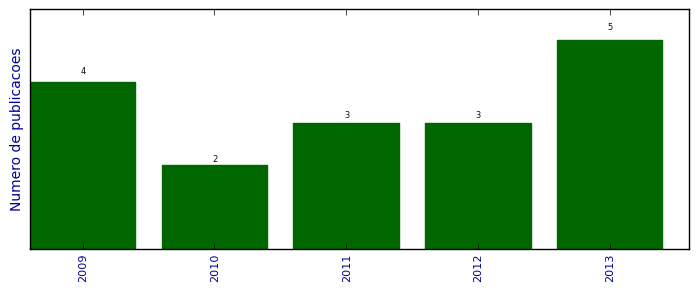

UFSM - Análise do Lattes
Artigos completos publicados em periódicos

Número total de itens: 17
(A1: 1, A2: 7, B1: 2, B2: 3, B3: 1, B4: 0, B5: 0, C: 0, Qualis não identificado: 3)
Legenda Qualis:
- Publicação para a qual o nome exato do Qualis foi identificado: Qualis <estrato>
- Publicação para a qual um nome similar (não exato) do Qualis foi identificado: Qualis <estrato> (nome similar)
- Publicação para a qual nenhum nome do Qualis foi identificado: Qualis não identificado (nome usado na busca)
2013
| 1. | BELLO, MARIANA DE CARLO ; AOZANI, VANESSA ; BUENO, RENATA RIZZOLO ; PACHALY, RAQUEL ; Villetti, Marcos Antonio ; POZZOBON, ROSELAINE TEREZINHA. Análise da intensidade de fluorescência em diferentes compósitos após exposição a agentes clareadores caseiros à base de peróxido de carbamida em diferentes concentrações. Revista da Faculdade de Odontologia. Universidade de Passo Fundo. v. 18, p. 44-48, 2013.  [ citações Google Scholar | citações Microsoft Acadêmico | busca Google ] Qualis: Não identificado (Revista da Faculdade de Odontologia. Universidade de Passo Fundo) |
| 2. | BUENO, R. P. ; SALOMONE, P. ; Villetti, Marcos Antonio ; ROSELAINE TEREZINHA POZZOBON. Effect of bleaching agents on the fluorescence of composite resins. European Journal of Esthetic Dentistry. v. 8, p. 582-591, 2013. [ citações Google Scholar | citações Microsoft Acadêmico | busca Google ] Qualis: Não identificado (European Journal of Esthetic Dentistry) |
| 3. | CRUZ DOS SANTOS, SANDRA ; FERNANDES LOGUERCIO, LARA ; SILVA CORRÊA, DIOGO ; RAMOS NUNES, MICHAEL ; ANTÔNIO VILLETTI, MARCOS ; TERESINHA SANTOS GARCIA, IRENE. Interfacial properties and thermal stability of modified poly( -phenylene isophthalamide) thin films. Surface and Interface Analysis (Print). v. 45, p. 837-843, 2013. [ citações Google Scholar | citações Microsoft Acadêmico | busca Google ] Qualis: B3 |
| 4. | FRIZZO, CLARISSA P. ; Villetti, Marcos A. ; TIER, ANIELE Z. ; GINDRI, IZABELLE M. ; BURIOL, LILIAN ; ROSA, FERNANDA A. ; CLARAMUNT, ROSA M. ; SANZ, DIONISIA ; MARTINS, MARCOS A.P.. Structural and thermodynamic properties of new pyrazolo[3,4-d]pyridazinones. Thermochimica Acta (Print). v. 574, p. 63-72, 2013. [ citações Google Scholar | citações Microsoft Acadêmico | busca Google ] Qualis: B2 |
| 5. | MAIA, ANA M. S. ; Villetti, Marcos A. ; BORSALI, Redouane ; BALABAN, ROSANGELA C.. Polyelectrolyte and Non-Polyelectrolyte Polyacrylamide Copolymer Solutions: the Role of Salt on the Intra- and Intermolecular Interactions. Journal of the Brazilian Chemical Society (Impresso). v. 24, p. 1871-1879, 2013. [ citações Google Scholar | citações Microsoft Acadêmico | busca Google ] Qualis: A2 |
2012
| 1. | AMARAL, GUILHERME PIRES ; CARVALHO, NELSON RODRIGUES DE ; BARCELOS, RÔMULO PILLON ; DOBRACHINSKI, FERNANDO ; PORTELLA, RAFAEL DE LIMA ; SILVA, MICHELE HINERASKY DA ; LUGOKENSKI, THIAGO HENRIQUE ; MUNDSTOCK DIAS, GLAECIR ROSENI ; DA LUZ, SÔNIA CRISTINA ALMEIDA ; BOLIGON, ALINE AUGUSTI ; ATHAYDE, MARGARETH LINDE ; Villetti, Marcos Antonio ; SOARES, FÉLIX ALEXANDRE ANTUNES ; FACHINETTO, ROSELEI. Protective action of ethanolic extract of Rosmarinus officinalis L. in gastric ulcer prevention induced by ethanol in rats. Food and Chemical Toxicology. v. 55, p. 48-55, 2012. [ citações Google Scholar | citações Microsoft Acadêmico | busca Google ] Qualis: A2 (Food and Chemical Toxicology) |
| 2. | Claudio S. Silveira ; Samuel R. Mendes ; Villetti, Marcos Antônio ; Davi F. Back ; Teodoro S. Kaufman. CeIII-Promoted oxidation. Efficient aerobic one-pot eco-friendly synthesis of oxidized bis(indol-3-yl)methanes and cyclic tetra(indolyl)dimethanes. Green Chemistry (Print). v. 14, p. 2912, 2012. [ citações Google Scholar | citações Microsoft Acadêmico | busca Google ] Qualis: A1 (Green Chemistry (Print)) |
| 3. | Collazzo, Gabriela Carvalho ; Foletto, Edson Luiz ; Jahn, Sérgio Luiz ; Villetti, Marcos Antônio. Degradation of Direct Black 38 dye under visible light and sunlight irradiation by N-doped anatase TIO2 as photocatalyst. Journal of Environmental Management. v. 98, p. 107-111, 2012. [ citações Google Scholar | citações Microsoft Acadêmico | busca Google ] Qualis: A2 |
2011
| 1. | Maia, Ana M. S ; Villetti, Marcos A ; Vidal, Rosangela R. L ; BORSALI, Redouane ; Balaban, Rosangela C. Solution properties of a hydrophobically associating polyacrylamide and its polyelectrolyte derivatives determined by light scattering, small angle x-ray scattering and viscometry. Journal of the Brazilian Chemical Society (Impresso). v. 22, p. 489-500, 2011. [ citações Google Scholar | citações Microsoft Acadêmico | busca Google ] Qualis: A2 |
| 2. | Villetti, Marcos A. ; Bica, Clara I. D. ; Garcia, Irene T. S. ; Pereira, Fabiano V. ; Ziembowicz, Francieli I. ; Kloster, Carmen L. ; Giacomelli, Cristiano. Physicochemical Properties of Methylcellulose and Dodecyltrimethylammonium Bromide in Aqueous Medium. Journal of Physical Chemistry. B. v. 115, p. 5868-5876, 2011. [ citações Google Scholar | citações Microsoft Acadêmico | busca Google ] Qualis: A2 |
| 3. | Villetti, Marcos A. ; SOLDI, Valdir ; Rochas, Cyrille ; BORSALI, Redouane. Phase-Separation Kinetics and Mechanism in a Methylcellulose/Salt Aqueous Solution Studied by Time-Resolved Small-Angle Light Scattering (SALS). Macromolecular Chemistry and Physics (Print). v. 212, p. 1063-1071, 2011. [ citações Google Scholar | citações Microsoft Acadêmico | busca Google ] Qualis: B1 |
2010
| 1. | Stieler, Rafael ; Bublitz, Fabrício ; Burrow, Robert A ; Oliveira, Gelson N. Manzoni de ; Villetti, Marcos A ; Pereira, Marcelo B ; Piquini, Paulo ; Lang, Ernesto S. Synthesis and characterization of [Cd8Cl2Se(SePh)12(PCy3)2] 2.5CH3OH. Journal of the Brazilian Chemical Society (Impresso). v. 21, p. 2146-2153, 2010. [ citações Google Scholar | citações Microsoft Acadêmico | busca Google ] Qualis: A2 |
| 2. | Tirloni, Bárbara ; Back, Davi F. ; Burrow, Robert A. ; Oliveira, Gelson N. M. de ; Villetti, Marcos A. ; Lang, Ernesto S.. Synthesis and crystal structure of chalcogenide cluster compound. Journal of the Brazilian Chemical Society (Impresso). v. 21, p. 1230-1236, 2010. [ citações Google Scholar | citações Microsoft Acadêmico | busca Google ] Qualis: A2 |
2009
| 1. | Ana Maria da Silva Maia ; Rosangela R. L. Vidal ; GARCIA, R. B. ; BORSALI, R. ; VILLETTI, M. A.. Study of the conformation of hydrophobically associating polyacrylamide and its polyelectrolyte derivatives through small angle X-ray scattering. Activity Report (Laboratório Nacional de Luz Síncrotron). v. 1, p. 1-2, 2009. [ citações Google Scholar | citações Microsoft Acadêmico | busca Google ] Qualis: Não identificado (Activity Report (Laboratório Nacional de Luz Síncrotron)) |
| 2. | Ernesto Schulz Lang ; Barbara Tirloni ; Gelson Manzoni de Oliveira ; VILLETTI, M. A.. New examples of the exploitation of intermediary ligands in the synthesis of polymeric (u-Se)Hg-clusters. Inorganica Chimica Acta. v. 362, p. 3114-3118, 2009. [ citações Google Scholar | citações Microsoft Acadêmico | busca Google ] Qualis: B2 (Inorganica Chimica Acta (Testo stampato)) |
| 3. | Ernesto Schulz Lang ; Robert A. Burrow ; Rafael Stieler ; Villetti, Marcos Antonio. Cadmium bis(phenylselenolate) as a precursor for the synthesis of polymeric Cd(u-Se)clusters: Crystal and molecular structures of [Cd4(SePh)7(PPh3)X]n(X=Cl,Br). Journal of Organometallic Chemistry. v. 694, p. 3039-3042, 2009. [ citações Google Scholar | citações Microsoft Acadêmico | busca Google ] Qualis: B1 (Journal of Organometallic Chemistry (Print)) |
| 4. | Gelson Manzoni de Oliveira ; Manfredo Horner ; Aline Machado ; Davi Fernando Back ; Bernardo Almeida Iglesias ; Villetti, Marcos Antonio. Stabilization of substitued triazene oxides by lanthanides chelation: Synthesis, TGA evaluations and x-ray structural features of [MIII{O2NPhNNN(O)Ph}4(Et3NH).H20 (M=La3+, Dy3+; Et=C2H5). Journal of Molecular Structure. v. 928, p. 85-88, 2009. [ citações Google Scholar | citações Microsoft Acadêmico | busca Google ] Qualis: B2 (Journal of Molecular Structure (Print)) |
(*) Relatório criado com produções desde 2009 até HOJE
Data de processamento: 11/04/2014 14:25:07